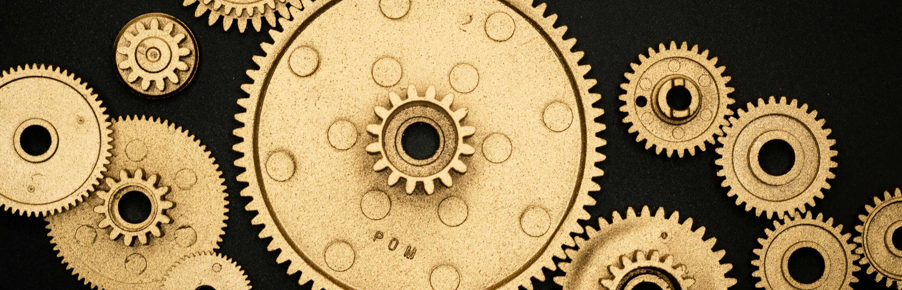

Procesos de dorado y policromía: documentación y presentación digital

En esta situación de aprendizaje vas a trabajar dentro del módulo de Aplicaciones informáticas, correspondiente al segundo curso del ciclo formativo de Dorado, Plateado y Policromía. A lo largo de esta propuesta te vas a introducir en el uso de herramientas digitales aplicadas a tu especialidad, combinando el trabajo artístico tradicional con el uso de software de edición de imagen.
Centro de interés o temática
El proyecto se centra en el uso de herramientas digitales para la documentación y presentación de procesos artísticos, aplicadas a trabajos de dorado, plateado y policromía. Se busca que el alumnado no solo aprenda a tratar y editar imágenes, sino también a comunicarlas de manera efectiva, generando recursos digitales que puedan ser presentados y compartidos profesionalmente.
Nivel al que va dirigido
2º Curso del Ciclo Formativo de Dorado, Plateado y Policromía.
Temporalización aproximada
15 Sesiones de 2h. 30h Totales.
Área o materias implicadas
Módulo de Aplicaciones Informáticas. Unidad didáctica “Montaje y retoque fotográfico”.
El objetivo principal es que aprendas a documentar y presentar de forma clara, ordenada y profesional los procesos de trabajo escultórico, utilizando herramientas digitales que te ayuden a mejorar la calidad visual y comunicativa de tus proyectos. Para ello, trabajarás con conceptos fundamentales de la imagen digital y con diferentes recursos y programas de edición de imagen.
Durante las actividades irás avanzando de forma progresiva: empezarás con contenidos básicos relacionados con la imagen digital y, poco a poco, irás utilizando herramientas más específicas de edición y retoque. Esto te permitirá aplicar lo aprendido en situaciones reales, relacionadas con tu ámbito profesional, como la simulación de acabados de dorado y plateado en imagen digital.
La propuesta está pensada para adaptarse a distintos niveles de experiencia con la tecnología. Por eso, al principio contarás con más apoyo y guía, y a medida que avances irás ganando autonomía en el uso de las herramientas y en la resolución de las actividades. Además, dispondrás de recursos digitales que te ayudarán a seguir el proceso de forma ordenada y accesible.